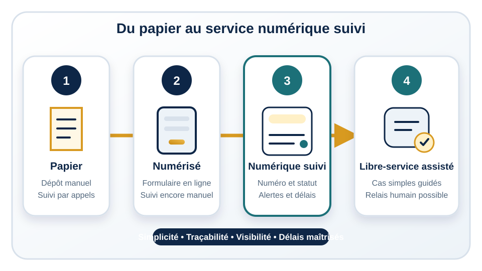

À la fin de cette leçon, vous pourrez reconnaître quatre niveaux de maturité d'un service,
distinguer un formulaire simplement mis en ligne d'un service réellement suivi et identifier
les éléments qui améliorent l'expérience de l'usager.
1. Les quatre niveaux d'évolution d'un service
Service papier
L'usager remplit un document, le remet ou l'envoie, puis contacte l'organisation pour
connaître la suite. Le suivi dépend de dossiers physiques, d'appels et de notes individuelles.
Service numérisé
Le formulaire est téléchargeable ou accessible en ligne. La réception est plus simple,
mais le traitement peut rester manuel, dispersé et invisible pour l'usager.
Service numérique suivi
La demande entre dans un processus structuré : numéro de suivi, responsable, statut,
échéance, notifications et tableau de bord. L'organisation peut surveiller les délais et
l'usager sait où en est sa demande.
Libre-service assisté, lorsque cela est pertinent
Pour certaines demandes simples, l'usager peut consulter une information, mettre à jour
ses données ou résoudre un besoin courant avec une assistance guidée. Ce niveau n'est utile
que lorsque les règles, le processus et les données sont déjà fiables.

Du papier au service numérique suivi
2. Ce qui améliore réellement un service
Un formulaire clair, avec des consignes compréhensibles.
Moins de champs inutiles et aucune demande répétée d'une même information.
Un numéro de suivi communiqué dès l'envoi.
Un responsable clairement désigné pour chaque demande.
Des statuts visibles et des notifications aux étapes importantes.
Des délais de réponse connus et suivis.
Un tableau de bord permettant de repérer les retards et les charges.
Une application ne garantit pas ces éléments. Elle peut même rendre un parcours plus
difficile si elle reproduit une procédure complexe, exige trop d'informations ou laisse
les équipes poursuivre le suivi dans des fichiers séparés.
3. Formulaire en ligne ou service numérique suivi ?
Formulaire simplement mis en ligne
Service numérique correctement suivi
Reproduit souvent le document papier.
Simplifie les questions et le parcours.
Envoie les réponses vers une boîte ou un fichier.
Crée une demande avec numéro, statut et responsable.
Le suivi repose sur des messages internes.
Le suivi est partagé dans un tableau de bord.
L'usager appelle pour connaître l'avancement.
L'usager consulte le statut et reçoit des notifications.
Les retards sont découverts tardivement.
Les échéances et alertes rendent les retards visibles.
4. Parcours complet d'un usager
Un participant souhaite modifier une inscription à une formation. Il ouvre un formulaire
court, choisit le type de demande et fournit uniquement les informations nécessaires.
Après l'envoi, il reçoit un numéro de suivi et un délai indicatif.
La demande apparaît dans le tableau de bord de l'organisation avec le statut « nouvelle ».
Un responsable la prend en charge, vérifie les données et passe le statut à « en cours ».
Le participant reçoit une notification. S'il manque une pièce, la demande passe à « information
requise » avec une instruction précise.
Lorsque la modification est terminée, l'usager reçoit une confirmation et le dossier est
clôturé. L'organisation suit les demandes proches de l'échéance, mesure le délai moyen et
repère les motifs qui génèrent le plus de corrections. Elle peut ensuite améliorer le formulaire
ou les consignes.
5. Libre-service et assistance par l'IA : une option avancée
Une assistance automatisée peut aider à orienter l'usager, expliquer une règle ou retrouver
une information. Elle ne doit pas être le point de départ. Si les données sont incohérentes,
les responsabilités floues ou les procédures variables, l'automatisation diffusera ces défauts.
L'assistance par l'IA devient pertinente lorsque les contenus de référence sont fiables,
les cas simples clairement définis et une possibilité d'intervention humaine reste disponible.
Erreurs fréquentes à éviter
Copier le formulaire papier sans simplifier les questions.
Ajouter des champs inutiles « au cas où ».
Laisser le suivi entièrement manuel après la soumission.
Cacher le statut et obliger l'usager à appeler.
Lancer une application sans responsable ni délai de réponse.
Mini-application
Choisissez un service connu. Notez les informations réellement nécessaires, les quatre
statuts les plus utiles, le responsable de chaque étape et les deux moments où une notification
aiderait l'usager. Identifiez ensuite un champ ou une étape que vous pourriez supprimer.
À retenir
Un service numérisé n'est pas nécessairement un service bien suivi.
La qualité dépend de la simplicité, des statuts et des responsabilités.
Le numéro de suivi et les notifications renforcent la traçabilité.
Le tableau de bord aide l'organisation à surveiller les délais.
Une application seule ne corrige pas un mauvais processus.
Le libre-service assisté vient après l'organisation des données et des règles.
Questions de révision
1. Quelle différence existe entre un service numérisé et un service numérique suivi ?
Réponse : le premier met la demande en ligne ; le second organise aussi le numéro, le statut, le responsable, les notifications et les délais.
2. Pourquoi une application ne garantit-elle pas une meilleure qualité de service ?
Réponse : elle peut reproduire une procédure complexe et laisser le suivi manuel si le parcours et les responsabilités ne sont pas repensés.
3. Quand une assistance par l'IA devient-elle pertinente ?
Réponse : lorsque les processus, données et contenus de référence sont organisés, et qu'un relais humain existe pour les cas complexes.